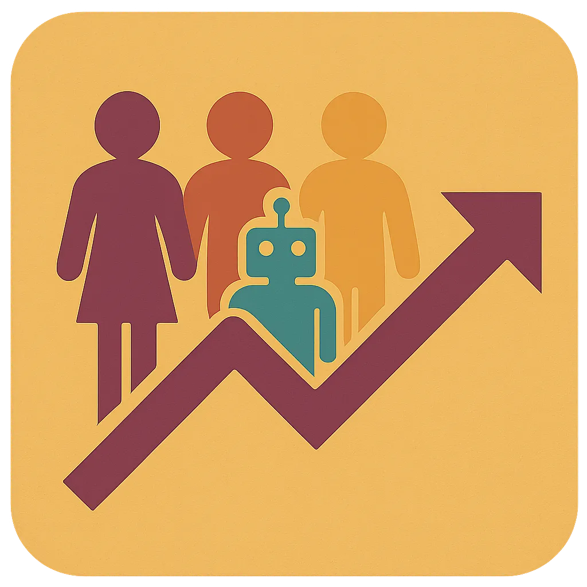
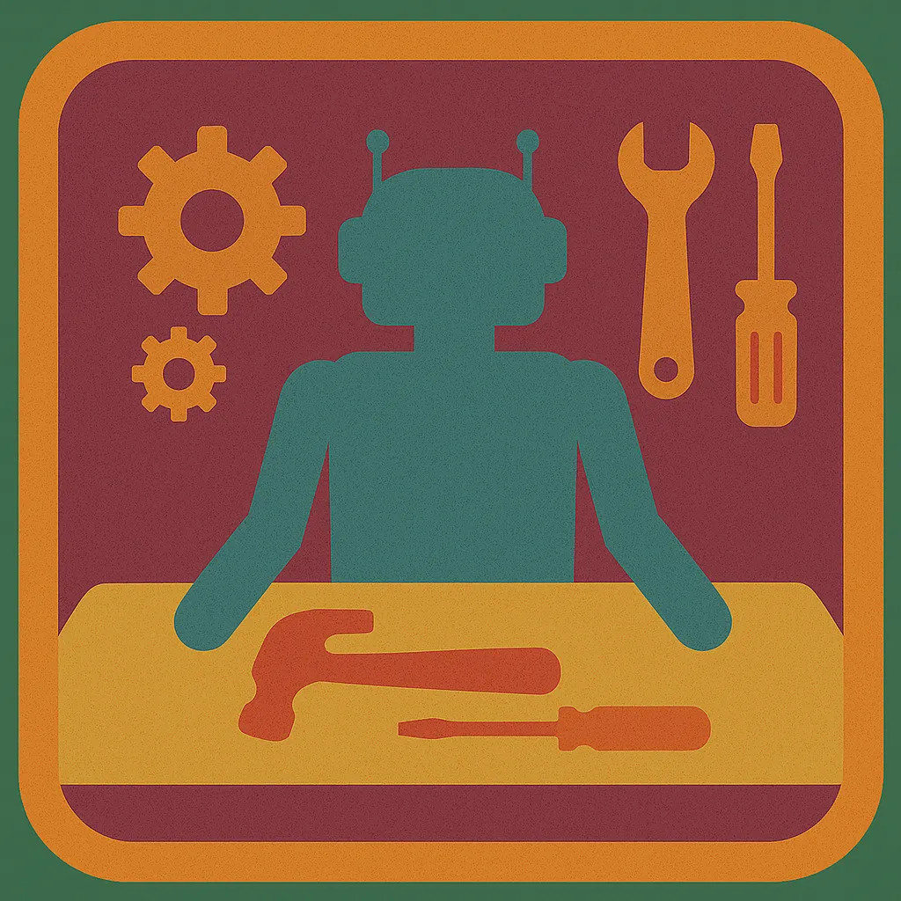
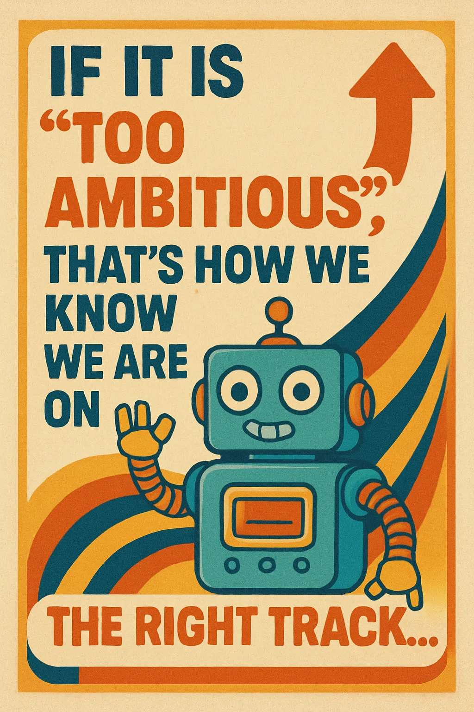

What is Happening?
Threat-actor adversaries will seek to build AI agents that can autonomously improve their own code to carry out new types of cyber attacks.
…therefore, security researchers must try to do the same — for defense and red-teaming.
That's a depressing (and exhausting) arms race.
Is There a Better Way?
Programs that can improve their own code… what if everyone could build that?
Think of it like this: you try to raise your kids to have a growth mindset, a lifelong love of learning, collaboration skills, and you send them off into the world.
That is the "compiler" we need to build.
Agentic SW Engineering
Still solving problems with software.
Only now Intelligence is both a Tool and a Design Element
Thinking About Thinking
- How do smart groups of human experts organize complex work?
- What problem am I trying to solve? What outcome do I want?
- Can I make that thought process into a tool?
- How do you build reliability into an untrustworthy system?

Prompts → Commands/Workflows
Patterns and Repeated Tasks → Code/Tools
- Workflow: Idea → Prompt → Issue → Worktree → TDD → PR → Code Review
- CI Iteration Loop
- "Eliminate all stubs, TODOs, Faked APIs…"
- Build e2e demos of user stories as a completeness test

Self-Improving Programs are Inevitable
The response is a framework for continuous, governed self-improvement:
- Captures comprehensive self-knowledge so rapid edits stay explainable
- Provides structured reflection loops to reconcile "what exists" with "what was intended"
- Offers safe experimentation venues to validate changes before production
But problems arise: intent drift, opaque decision paths, context poisoning…
Self-Improvement Modes
- Quality-driven: Bug elimination, latency reduction, reliability
- Goal-driven: Meeting business or product objectives
- Design-thinking: Deepening empathy with user needs
- Evolutionary: Exploring solution space through controlled mutation
- Security/resilience: Responding to threats and vulnerabilities
- Compliance/policy: Aligning with regulatory changes
- Cost/efficiency: Optimizing resource usage
- Personalization: Tailoring behavior to preferences
Big Challenges and Open Questions
Discuss, Engage, Build
Ship of Theseus Problem
Is it still my program?
Imagine a program that is adaptive — to user needs or real-world environment. What happens when it has changed enough that it's no longer the code that was "shipped"?
"Shipping" bits starts to mean something very different — the set of guardrails, the embodied intent, becomes as important as the code.
…skepticism is an asset
I have never regretted starting over.
Letting go of the code you have but keeping the best ideas leads to learning new things.

Transitional Stage
- It is accelerating and there's no going back
- Vibe Coding is just a waypoint, the destination is Self-Improving Systems
- Keep putting more guardrails and feedback loops
- Product requirements become part of the guardrails
- Keep pushing boundaries of automation
How Can You Get Started?
- Grab Tools and SDKs
- Give your Agents Self-Reflection
- Build Up Patterns Upon Patterns

Let's Dive In! (Live Demo)
- Injecting Context
- Customizations
- Building Tools and Skills
- Reflection

How Claude Code Works
Event-Driven Agentic Loop
- Session Start/Stop, User Prompt/Agent Stop
- Tool or Task I/O (Filesystem, Todo, Bash, Search, Fetch, Task)
- Hooks allow user automation around the agentic loop
Reflection: Learn from how it's going
- UserPromptSubmit → Is the user frustrated?
- SessionStop → How did this session go?
- Derive: New Guidelines, Guardrails, Skills, Tools
- Build tools that help you build tools
- Avoid recursion on reflection — use a semaphore
Injecting Context – Close the Loop
- Take learning from Reflection and Build it in
- SessionStart, SubAgentStart → context for every session
- UserPromptSubmit → context for every turn
Customization
One tiny way to use learning is for deep customization.
Drive behaviors or tool use that is specific to your project or your preferences.
Building Guardrails
If you give specific guidance over and over, you should bake it in.
Building Tools, Commands, Agents, Skills
- Scripts/Tools: Deterministic steps, no semantic reasoning
- Commands: Instructions the agent reasons over
- Subagents: Specific behaviors and points of view
- Skills: Compilations of know-how
Building Outside Claude Code?
- Claude Agent SDK as a general purpose SDK
- Microsoft Agent Framework for workflow semantics
- What processes do you want to learn from?
- Where do you need guardrails?